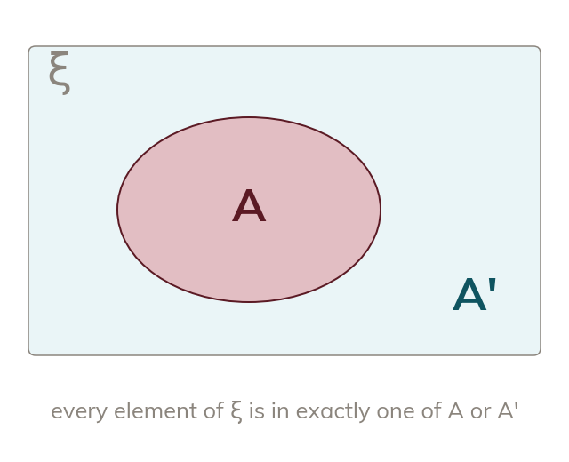

The complement
The complement A' is every element of ξ not in A. Each element is in A or A', never both.
The complement of A, written A', is every element of the universal set that is NOT in A. Every element of ξ is in exactly one of A or A' - never both, never neither.